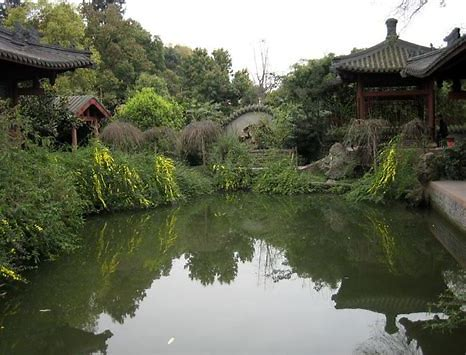
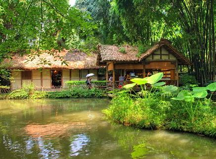
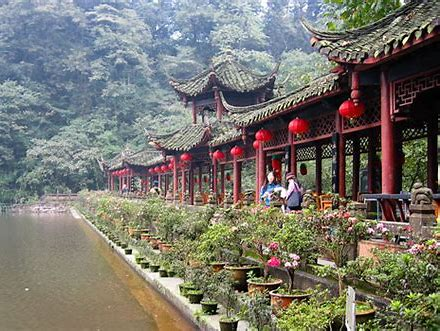
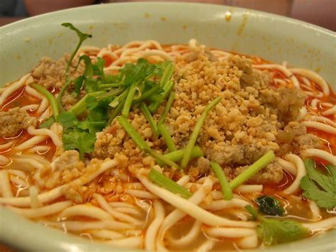
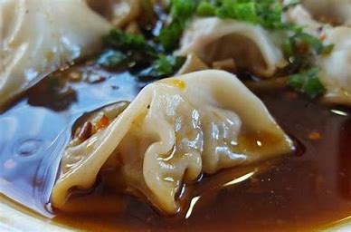
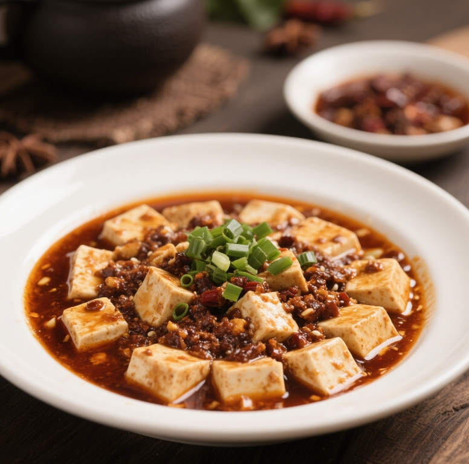
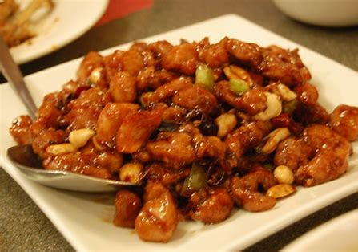
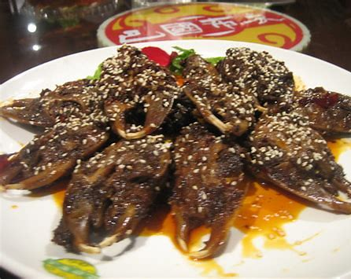
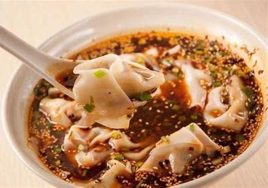

Chengdu: A Blend of Ancient and Modern
Chengdu, the capital of Sichuan Province in southwestern China, beautifully merges ancient traditions with modern energy. With over 2,000 years of history, it has long been a vital economic and cultural center in the region. In ancient times, it was a key stop on the Southern Silk Road, fostering trade and cultural exchange between China and Southeast Asia. Today, Chengdu has grown into a modern metropolis, known for its thriving innovation and numerous high-tech companies and startups.
Chengdu's unique appeal lies in its relaxed lifestyle, a core part of its local culture. Despite rapid development, the traditional leisurely pace, like people enjoying tea in local teahouses, remains a constant. Culturally, Chengdu embodies Sichuanese culture, evident in its distinct dialect, performing arts, and lively celebrations. With its well-connected transport and diverse accommodation options, it's an attractive destination for travelers wanting to experience the richness of Chinese culture.
Chengdu Highlights
Getting to Chengdu
By Air
Chengdu is served by two main airports. Chengdu Shuangliu International Airport (CTU) has long been a major air hub for both domestic and international flights. However, Chengdu Tianfu International Airport (TFU), opened in 2021, is becoming increasingly important. It now serves as a key hub, offering more flight options to destinations worldwide. Many international airlines operate from these airports, making Chengdu easily accessible for global travelers.
By Train
Chengdu has several railway stations, with Chengdu Station and Chengdu East Station being two of the primary ones. High-speed trains connect Chengdu to major cities throughout China. For example, the Chengdu-Chongqing High-Speed Railway provides quick access to Chongqing. You can also reach Beijing, Shanghai, Guangzhou, and many other cities by train, offering fast and comfortable travel.
Getting Around in Chengdu
Metro
The Chengdu Metro is an efficient way to navigate the city. Its expanding network covers most of the urban area. For payment, the Chengdu Transportation Card is a convenient option for multiple trips. You can also buy single-trip tickets at metro station vending machines, and mobile payment via Alipay and WeChat Pay is widely accepted at ticket gates. Trains run frequently, with increased service during peak hours.
Bus
Chengdu has an extensive bus network. Bus fares are generally affordable, around 1-2 yuan. You can pay with cash (exact amount recommended) or use the Chengdu Transportation Card. Some buses also support mobile payment. Bus routes are clearly marked at stops, offering a good way to see the city streets, though traffic can be heavy during rush hour.
Taxi / Ride-hailing
Taxis are readily available in Chengdu. They use meters, with fares based on distance and waiting time. You can hail taxis on the street or find them at taxi stands outside airports, railway stations, and major shopping centers. Ride-hailing apps like Didi are also popular in Chengdu, providing a convenient alternative for booking rides.
Shared Bikes
Shared bikes are a popular and eco-friendly option for getting around Chengdu for short distances. Brands like Meituan Bike and Hello Bike are commonly available. To use them, download the app, register, and scan the QR code on the bike to unlock it. Payment is usually based on usage time and is easily done through the app. Shared bikes are great for exploring local areas, but remember to park them in designated spots.
Ferries (Limited)
While not as common as in coastal cities, Chengdu does have some ferry services. These are mainly in suburban areas with rivers, offering small-scale transport. Ferries typically operate between specific villages or scenic spots along the river. Payment is usually in cash, and ferry stops are basic platforms along the riverbank. These services are more for local transport than a primary option for tourists.
Famous Attractions
Chengdu Research Base of Giant Panda Breeding
A top attraction where you can observe adorable giant pandas eating bamboo, playing, and napping. It's one of the best places in the world to see these iconic animals up close, with various viewing areas.
Jinli Ancient Street
A lively street filled with traditional Sichuan architecture. Here, you can shop for handicrafts, sample local snacks, and soak up the vibrant atmosphere. The well-preserved old buildings and bustling market bring ancient Chengdu to life.
Wuhou Shrine
A shrine dedicated to Zhuge Liang, a famous strategist from ancient China. Admire the solemn temples and historical artifacts. Its historical significance and well-maintained architecture offer a deep dive into Chinese history and culture.
Du Fu Thatched Cottage
The former residence of the renowned Tang Dynasty poet Du Fu. The peaceful garden, traditional houses, and numerous inscriptions of his poems create a serene and literary atmosphere, ideal for poetry enthusiasts.
Mount Qingcheng
Known as "the most secluded place under heaven," it features lush forests, clear streams, and ancient Taoist temples. Hiking here allows you to enjoy nature and experience tranquility, with beautiful scenery along the way.
Kuanzhai Alleys
A living museum of old Chengdu, comprising wide Kuan Alley, narrow Zhai Alley, and Jing Alley. Stroll along the cobblestone streets, explore traditional courtyard houses, and try local snacks. The alleys perfectly preserve the city's ancient charm and local lifestyle.
Cultural Experiences
Sichuan Opera Performance
Witness the captivating face-changing act, along with vibrant singing and dancing. The elaborate costumes and dynamic performances showcase Sichuan's rich cultural heritage.
Teahouse Experience in People's Park
Relax in a traditional teahouse, sip tea, play mahjong, and chat with locals. It's a quintessential Chengdu experience, reflecting the city's laid-back lifestyle.
A Taste of Chengdu: Famous Foods
Chengdu's cuisine is renowned for its bold flavors, particularly the numbing spice (ma la) from Sichuan peppercorns. Here are some must-try dishes:
Dan Dan Noodles
Thin wheat noodles topped with a spicy sauce made from chili oil, soy sauce, and minced meat. The sauce's rich, ma la (numbing-hot) flavor, combined with the chewy noodles, makes it a must-try. It's a popular street food known for its bold taste.
Zhong Shui Jiao (Zhong's Dumplings)
Plump pork dumplings served in a spicy, sweet, and savory sauce. The dumpling wrapper is thin, and the filling is flavorful. The unique sauce, a blend of seasonings, gives it a distinct and delicious taste.
Mapo Tofu
Soft tofu cooked in a spicy sauce with minced meat and Sichuan peppercorns. The tofu remains tender while absorbing the bold, ma la flavors. It's a classic Sichuan dish famous for its fiery taste.
Kung Pao Chicken
Diced chicken stir-fried with peanuts, vegetables, and dried chili peppers. This dish balances spiciness with a hint of sweetness, and the combination of textures from the chicken, peanuts, and vegetables is very appealing.
Hot Pot
A communal dining experience with a simmering pot of broth (spicy or mild) where you cook various ingredients like meats, vegetables, and noodles. The interactive process is as enjoyable as the diverse flavors.

Rabbit Head
Rabbit heads marinated in a rich, spicy sauce. While it might seem unusual, the meat is tender and flavorful. The spicy marinade permeates every part, offering a unique culinary adventure.
Longchaoshou (Wontons)
Large wontons with various fillings, often pork, served in a flavorful broth, sometimes with a spicy kick. The plump wontons and savory broth make for a comforting meal.
Accommodation
Chunxi Road Area
Chengdu's bustling commercial center, full of shopping malls, restaurants, and entertainment. Excellent transport links. Offers a wide range of hotels from luxury to budget.
Kuanzhai Alleys Vicinity
Stay near these historic alleys to experience traditional Chengdu life. Boutique hotels and guesthouses with unique charm. Close to cultural sites and local eateries.
Wuhou Shrine Area
Near Wuhou Shrine and Jinli Street. Offers a mix of cultural attractions and local flavor. Good transport connections. Various accommodation options available.
Tianfu Square Surroundings
The city's central square, close to museums and government buildings. Very convenient for transportation. Hotels cater to business and leisure travelers.
Weather Guide
Cold and Foggy (Dec - Feb)
Around 5°C (41°F), often overcast or foggy. Feels damp. Need warm coats, sweaters, thermal wear. Indoor heating is common.
Mild and Rainy (Mar - Apr & Oct - Nov)
10°C - 20°C (50°F - 68°F). Pleasant but often rainy, especially in spring. Light jacket, sweaters, long pants. Umbrella is essential.
Warm and Pleasant (May & Sep)
20°C - 25°C (68°F - 77°F). Comfortable temperatures, good for outdoor activities. T-shirts, light trousers, skirts. Maybe a light jacket for evenings.
Hot and Humid (Jun - Aug)
Above 25°C (77°F), can reach mid-30s°C (90s°F). High humidity. Light, breathable clothing like cotton T-shirts, shorts, dresses. Sun protection needed.
Must-Do List
- Visit the Chengdu Panda Base to see giant pandas up close.
- Stroll through Jinli Ancient Street for snacks and souvenirs.
- Explore the historic Kuanzhai Alleys and experience old Chengdu.
- Pay respects at the Wuhou Shrine, dedicated to Zhuge Liang.
- Find tranquility at Du Fu Thatched Cottage, the poet's former home.
- Indulge in a spicy Sichuan Hot Pot experience.
- Try authentic Dan Dan Noodles from a local eatery.
- Sample Mapo Tofu, a classic fiery Sichuan dish.
- Be adventurous and taste the local delicacy, Spicy Rabbit Head.
- Watch a Sichuan Opera performance, including the famous face-changing.
- Relax at a traditional teahouse in People's Park.
- Hike or visit the serene Mount Qingcheng.
- Shop till you drop at the vibrant Chunxi Road.
- Learn about ancient Shu civilization at the Jinsha Site Museum.
Classic Tour Itineraries
Two-Day Panda and Culture Route
Day 1: Arrive, check in near Kuanzhai Alleys. Explore Kuanzhai Alleys. Visit Wuhou Shrine & Jinli Street. Dinner (local snacks in Jinli).
Day 2: Morning at Chengdu Panda Base. Afternoon at Du Fu Thatched Cottage. Evening Sichuan Opera show. Depart.
Three-Day Foodie Adventure Route
Day 1: Arrive, check in near Chunxi Road. Explore Chunxi Road food stalls. Dinner (Hot Pot).
Day 2: Morning food tour (Dan Dan Noodles, Zhong Dumplings). Visit a local wet market. Afternoon cooking class (learn Mapo Tofu). Evening explore local bars.
Day 3: Try Rabbit Head for lunch. Relax in a teahouse at People's Park. Farewell dinner (try Kung Pao Chicken). Depart.
Four-Day Chengdu & Surroundings Route
Day 1: Arrive, check in. Kuanzhai Alleys & Jinli Street exploration.
Day 2: Full day trip to Leshan Giant Buddha (requires separate transport).
Day 3: Morning at Chengdu Panda Base. Afternoon visit Jinsha Site Museum.
Day 4: Day trip to Mount Qingcheng (hiking/Taoist temples). Return to Chengdu & depart.